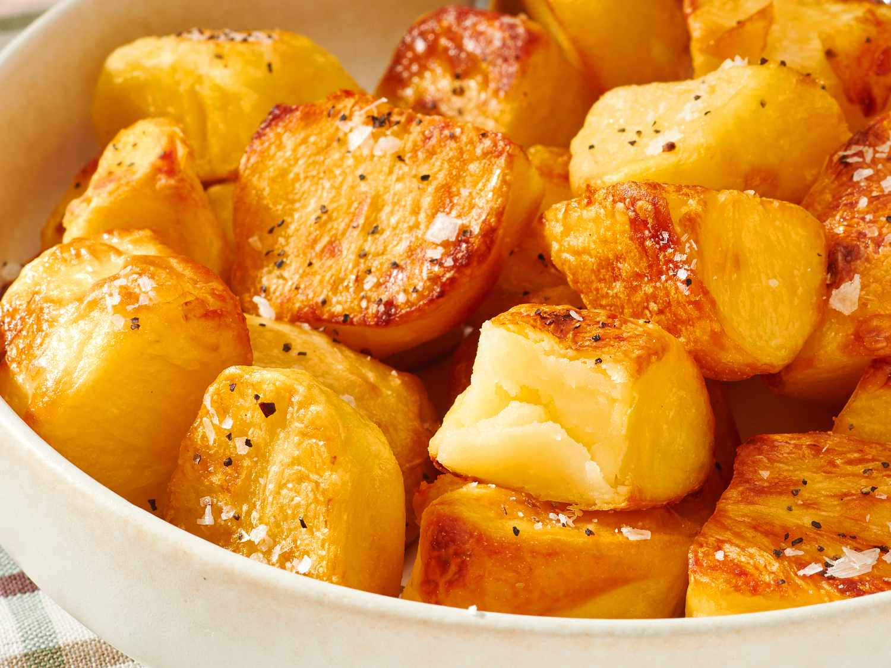

Home
Irish Roasties

Description
Irish Roasties are crispy, golden-brown roasted potatoes with a crunchy exterior and a soft, fluffy center.
The potatoes are first parboiled and gently fluffed to create a rough surface, then roasted in hot olive oil
until perfectly crackly and golden. Finished with flaky sea salt and freshly cracked black pepper,
they make a simple and delicious side dish for any meal.
Ingredients
- 2 pounds floury potatoes, such as Russets
- 2 tablespoons olive oil, or more as needed
- flaky sea salt, to taste
- freshly cracked black pepper, to taste
Steps:
- Preheat the oven to 400 degrees F (200 degrees C). Pour
olive oil into a large sheet pan and set aside.
- Scrub and peel potatoes. If using large Russets, cut into
quarters. If using a smaller potato, cut into halves.
- Place the potatoes in a large saucepan and cover with cold
water. Set over high heat and bring to a boil. Once water boils,
reduce to a strong simmer and parboil potatoes until the outsides
are tender, but the inside is still firm, checking frequently
with the tip of a paring knife, 5 to 10 minutes.
- Turn off the burner and drain potatoes in a colander. Place empty
saucepan back on the hot burner to dry and place the prepped sheet
pan in the preheated oven.
- Once the water is drained, "fluff" the potatoes by gently shaking
and swirling the colander until the exteriors are roughened. Set
the colander on top of the empty saucepan for 2 to 3 minutes, until
the potatoes are completely dry.
- Carefully remove hot sheet pan from the oven. Tip potatoes
on top of the sheet pan and gently stir to coat with the hot
oil. Roast in the preheated oven for 40 minutes, then flip each
potato and roast until the exterior is crackly and golden brown,
another 20 minutes.
- Serve alongside flaky sea salt and freshly cracked black pepper
so each diner can season to taste like they often do in Ireland.